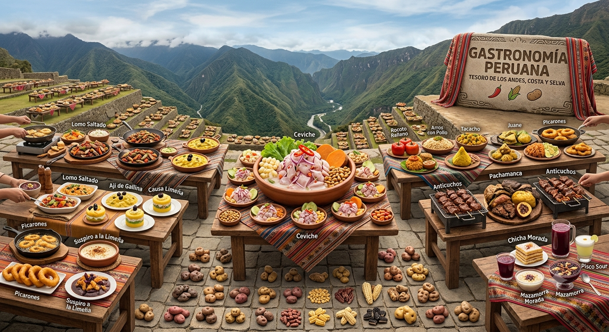
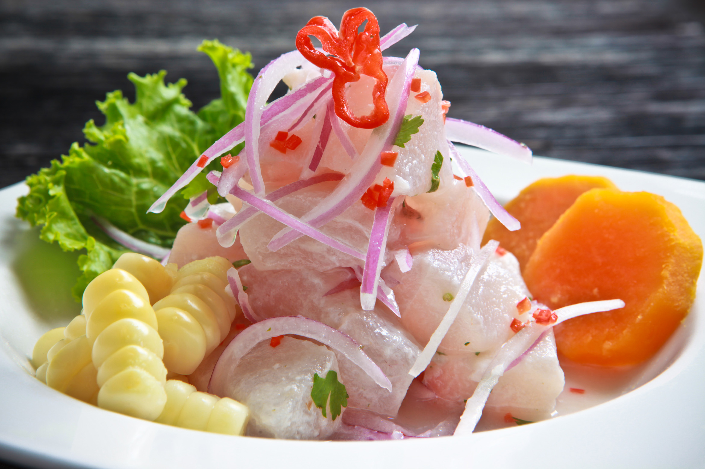
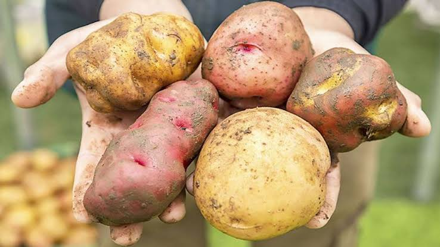
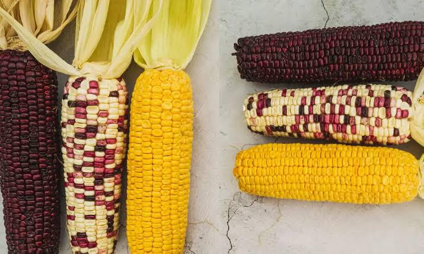
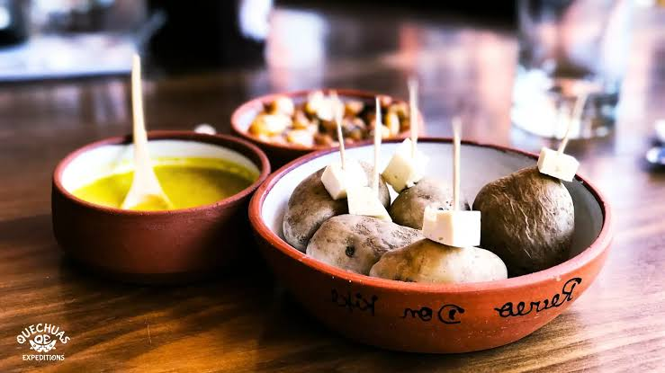
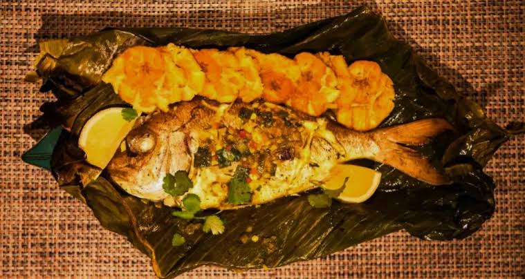
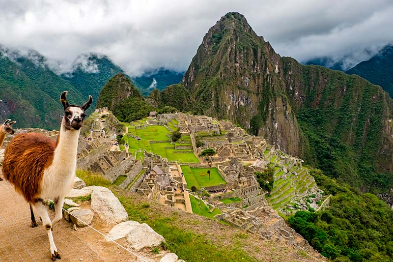

Descubre los sabores del Perú
Explora la riqueza culinaria de la costa, sierra y selva peruana.
La Gastronomía Peruana
La gastronomía peruana es reconocida mundialmente por su diversidad de sabores, ingredientes y tradiciones culinarias.
🍽️ Platos Típicos

Ceviche
Plato emblemático del Perú preparado con pescado fresco, limón, cebolla y ají.

Lomo Saltado
Combinación de carne, cebolla, tomate y papas fritas, influenciada por la cocina china-peruana.

Ají de Gallina
Cremoso plato elaborado con pollo desmenuzado, ají amarillo y pan.
🌽 Ingredientes Tradicionales

Ají Amarillo
Uno de los ingredientes más representativos de la cocina peruana.

Papa Peruana
Perú posee miles de variedades de papa que forman parte esencial de su gastronomía.

Maíz
Presente en diversas preparaciones y bebidas típicas de las regiones peruanas.

Quinua
Considerado un superalimento andino por su alto valor nutricional.
🗺️ Regiones Gastronómicas

Costa
La costa peruana destaca por sus platos marinos, especialmente el ceviche, la causa limeña y los tiraditos.

Sierra
La gastronomía andina incluye platos tradicionales como la pachamanca, el cuy chactado y preparaciones con papa y quinua.

Selva
La cocina amazónica se caracteriza por ingredientes naturales como el plátano, la yuca y el pescado de río.
📜 Cultura e Historia

Machu Picchu representa el legado histórico y cultural del Perú. Las antiguas civilizaciones andinas desarrollaron técnicas agrícolas que permitieron cultivar ingredientes como la papa, el maíz y la quinua, fundamentales en la gastronomía peruana actual.
🏛️ Cultura y Símbolos del Perú

El cóndor andino es uno de los símbolos más importantes del Perú y representa la conexión entre la naturaleza y las culturas andinas. Su imagen forma parte de las tradiciones que enriquecen la identidad cultural del país y complementan el valor de su patrimonio gastronómico.